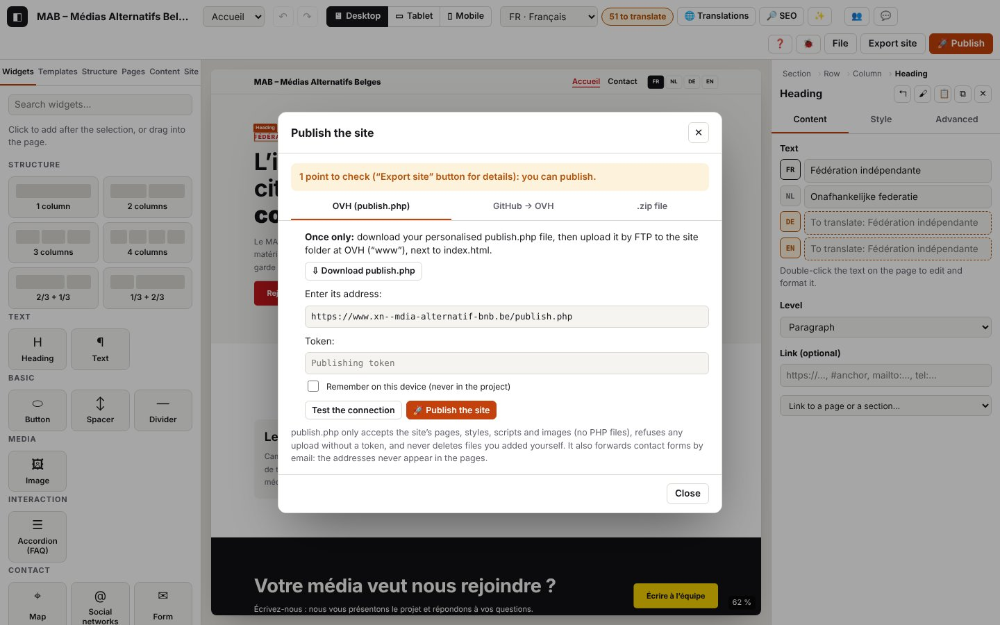

8. Check, export, publish

On this page
The log extracts below were captured in French; codes and levels are identical in every language (the messages in your log are in the interface language).
Before putting the site online, Atelier checks it (blocking errors, points to check), then generates it (static HTML pages, styles, images, sitemap, feeds, events) and sends it: as a .zip to upload yourself, to OVH with publish.php (a single PHP file uploaded once), or to a GitHub repository that the hosting deploys.
Log domains: audit.* (check), export.* (.zip file), publish.* (Publish window: publish.php, connection test, GitHub), storage.secret-* (tokens kept on the device), net.* (requests), php.* (what publish.php did, on the server side).
Note: publish.php writes its own messages in French, whatever the interface language. When the editor shows one of them, it is quoted below as it appears, with its meaning in brackets.
8.1 Check the site before export
Goal: find out whether the site can go out, and what should be fixed.
Steps: the Export site button (top right), or the “N to translate” badge.
What you see: the “Check before export” window: errors (which block), points to check (with “Go to”), information, texts to translate.
Expected log (journaux/export-zip.log)
Technical details: expected log
04:38:05.935 +6.36s INFO audit.open Vérification avant export : prêt (1 point(s) à vérifier) {"mode":"export","ok":true,"errors":0,"warnings":1,"info":3,"missing":51,"ms":3,"firstErrors":[],"firstWarnings":["Accueil : image non choisie : rien ne s’affichera à cet endroit."]}
04:38:05.937 +6.37s DEBUG ui.dialog.open Fenêtre ouverte : Vérification avant export {"id":"auditDialog","class":"audit","modal":true}missing = untranslated texts; firstWarnings = the first five points to check, in plain words.
Variants
| Situation | What changes | Log |
|---|---|---|
| Errors block the export | “N errors prevent the export.”, export button disabled | audit.open as WARN with firstErrors |
| “N to translate” badge | “Texts to translate” window | audit.open {"mode":"translations",…} |
| “Go to” on a point | the window closes, the element is selected (page, language, component or collection) | audit.go (INFO) with the target, then store.view, store.select |
8.2 Export the site as a .zip
Goal: get all the site’s files, to upload them to any hosting.
Steps: Export site → “Export site” (or “Export anyway” if there are still points to check).
What you see: a site-name.zip file is downloaded; message “Site exported: N files.”.
Expected log (journaux/export-zip.log)
Technical details: expected log
04:38:05.986 +6.42s INFO audit.export Export malgré des points à vérifier {"warnings":1}
04:38:05.988 +6.42s INFO export.zip.start [export.zip#1] Export du site en .zip
04:38:05.992 +6.42s DEBUG export.zip.render [export.zip#1 · 4 ms] Pages générées {"files":12,"ms":3}
04:38:05.999 +6.43s INFO export.zip.ok [export.zip#1 · 11 ms] Site exporté : 12 fichiers {"files":12,"kb":69,"untranslated":51}
04:38:05.999 +6.43s INFO ui.toast Message affiché : Site exporté : 12 fichiers. 51 textes non traduits s’affichent dans la langue principale.Errors
| Situation | Message shown | Log | What to do |
|---|---|---|---|
| The site is not valid | “Export failed: …” | export.zip.fail (ERROR) with the errors | fix the first error listed |
| Error during generation (bug) | “Export failed: …” | export.zip.fail (ERROR) with the call stack | send us the log |
8.3 Publish to OVH: install publish.php (once)
Goal: let Atelier publish directly to the hosting.
Steps
- 🚀 Publish → “OVH (publish.php)” tab → ⇩ Download publish.php. The file contains only the fingerprint of a new token; the token itself stays in the “Token” field (tick “Remember on this device” to keep it; it is never stored in the project).
- Upload
publish.phpby FTP into the site’s folder (“www”), next toindex.html. It replaces the old one if there was one: the old token no longer works. - Enter its address:
https://www.your-site.be/publish.php.
Expected log (journaux/publier-telecharger-php.log)
Technical details: expected log
04:38:06.183 +6.61s INFO publish.open Fenêtre Publier {"mode":"zip","tab":"php","ok":true,"errors":0,"warnings":1}
04:38:06.197 +6.63s DEBUG storage.secret-read Aucun secret gardé {"name":"php-token"}
04:38:06.198 +6.63s DEBUG storage.secret-read Aucun secret gardé {"name":"github-token"}
04:38:06.287 +6.72s INFO storage.secret-write Secret oublié sur cet appareil {"name":"php-token"}
04:38:06.297 +6.73s INFO publish.php.generate publish.php v4 téléchargé avec un nouveau jeton (l’ancien publish.php ne l’acceptera pas) {"version":"4","remember":false}publish.open: state of the check when the window opens (firstErrorif publishing is blocked).storage.secret-read/storage.secret-write: the token kept on or forgotten from this device (“Secret kept…” if the box is ticked). The token never appears in the log.
Errors
| Situation | Message shown | Log | What to do |
|---|---|---|---|
Address that does not end with publish.php, or not https | “Expected address: https://www.your-site.be/publish.php” | publish.settings-invalid (WARN) | fix the address (http is accepted only for a local test) |
| Token unreadable on the device | storage.secret-fail (WARN) | type the token again |
8.4 Test the connection
Goal: check that publish.php answers, that it is up to date and that the token matches, and find out the hosting’s limits.
Steps: “Test the connection”.
What you see: “Connection successful: publish.php version 4, PHP 8.x. Max upload 2M (form 8M), mail() present, folder writable.”
Expected log (journaux/publier-tester-connexion.log)
Technical details: expected log
04:38:06.392 +6.82s INFO publish.test.start [publish.test#1] Test de connexion à publish.php {"url":"http://127.0.0.1:9501/publish.php","token":true}
04:38:06.393 +6.82s DEBUG net.request GET 127.0.0.1:9501/publish.php {"id":1,"method":"GET","url":"http://127.0.0.1:9501/publish.php?atelier_debug=1"}
04:38:06.416 +6.84s DEBUG net.response 200 GET 127.0.0.1:9501/publish.php (23 ms) {"id":1,"status":200,"ms":23,"type":"application/json","req":"3f2f4264"}
04:38:06.422 +6.85s DEBUG php.req.start GET reçu {"method":"GET","who":"e184e45609","bytes":0,"ua":"Mozilla/5.0 …","origin":"http://localhost:8791","req":"3f2f4264","srvMs":0}
04:38:06.423 +6.85s WARN php.diag Diagnostic de l’hébergement demandé : limite d’envoi basse (2 Mo) {"upload_max":"2M","post_max":"8M","data_writable":true,"zip":true,"mail":true,"req":"3f2f4264","srvMs":0.6}
04:38:06.423 +6.85s DEBUG php.status Statut demandé (test de connexion) {"version":"4","zip":true,"diag":true,"req":"3f2f4264","srvMs":1}
04:38:06.423 +6.85s DEBUG php.req.end Réponse 200 (status) {"status":200,"route":"status","mem_kb":741,"req":"3f2f4264","srvMs":1}
04:38:06.418 +6.85s INFO publish.test.diag [publish.test#1 · 26 ms] Diagnostic de l’hébergement {"upload_max_filesize":"2M","post_max_size":"8M","memory_limit":"-1","max_execution_time":30,"mail":true,"data_writable":true,"root_writable":true,"log_level":"info",…}
04:38:06.418 +6.85s INFO publish.test.ok [publish.test#1 · 26 ms] publish.php répond {"version":"4","php":"8.3.6","zip":true,"req":"3f2f4264"}- The
php.*lines come from the server (trace of request3f2f4264). php.diagas WARN:upload_max_filesizeis below 8 MB. The whole site is sent as a single .zip: if it goes over this limit, publishing fails (php.publish.nofile). At OVH, the limit is set in the customer area (PHP configuration) or with.user.ini.publish.test.diag: the whole diagnosis (max upload, memory, max duration,mail(), write permissions, free space, extensions).
Variants
| Situation | What changes | Log |
|---|---|---|
| No token in the field | no diagnosis | publish.test.start {"token":false}, php.status {"diag":false}, publish.test.ok |
| Old publish.php (version 3 or earlier) | “A newer version (4) exists: download publish.php again to get the server log.” | publish.test.old-version (WARN) {"installed":"3","expected":"4"} |
Errors (journaux/publier-tester-erreurs.log, journaux/publier-ovh-jeton-absent-faux.log)
| Situation | Message shown | Log | What to do |
|---|---|---|---|
| Server unreachable, wrong address, file missing | “No reply from publish.php at this address (Failed to fetch)…” | net.fail (ERROR), publish.test.fail (ERROR) with hint | open the address in a tab: it must show {"atelier":true,…}; otherwise the file is not in the right place |
PHP prints warnings in the reply (OVH “dev” mode, display_errors) | “… 200 reply that is not from publish.php” | publish.test.not-json (WARN) with the beginning of the reply (start), then publish.test.fail | read start: it is PHP’s message; switch the hosting back to production mode (.ovhconfig) |
| The token entered does not match this publish.php | “Warning: the token entered does not match this publish.php.” | publish.test.token-refused (WARN); on the server php.diag.denied (WARN) | download publish.php again and upload it again, or use the right token |
| zip extension missing on the hosting | “… zip extension missing!” | publish.test.no-zip (WARN) | turn on the zip extension (the hosting’s PHP configuration) or publish through GitHub |
Technical details: expected log
04:38:08.110 +8.54s INFO publish.test.start [publish.test#3] Test de connexion à publish.php {"url":"http://127.0.0.1:9502/publish.php","token":true}
04:38:08.116 +8.54s ERROR net.fail GET 127.0.0.1:9502/publish.php : Failed to fetch (réseau, CORS ou adresse injoignable) {"id":7,…,"online":true,"error":{"name":"TypeError","message":"Failed to fetch"}}
04:38:08.117 +8.55s ERROR publish.test.fail [publish.test#3 · 7 ms] Failed to fetch {"url":"http://127.0.0.1:9502/publish.php","hint":"Le navigateur n’a reçu aucune réponse utilisable : serveur injoignable, adresse fausse, ou réponse sans autorisation CORS (fichier absent → page d’erreur de l’hébergement, ou PHP non exécuté).",…}
04:38:08.288 +8.72s DEBUG net.response 200 GET 127.0.0.1:9501/avertissement/publish.php (7 ms) {"id":9,"status":200,"ms":7,"type":"text/html"}
04:38:08.290 +8.72s WARN publish.test.not-json [publish.test#5 · 10 ms] La réponse n’est pas du JSON : PHP n’est peut-être pas exécuté, ou une page d’erreur de l’hébergement répond {"status":200,"start":"<br />\n<b>Warning</b>: session_start()…"}
04:38:08.366 +8.79s WARN publish.test.old-version [publish.test#6 · 9 ms] publish.php installé en version 3 : la version 4 ajoute le journal du serveur et le diagnostic {"installed":"3","expected":"4"}
04:38:08.366 +8.79s INFO publish.test.ok [publish.test#6 · 9 ms] publish.php répond {"version":"3","php":"8.3.6","zip":true}8.5 Publish to OVH
Goal: put the site online in one click.
Steps: “🚀 Publish the site”.
What you see: “Site published: N files uploaded…” and the message “Site published (N files).”.
Expected log (journaux/publier-ovh.log)
Technical details: expected log
04:38:06.488 +6.92s INFO publish.php.start [publish.php#1] Publication sur OVH (publish.php) {"url":"http://127.0.0.1:9501/publish.php"}
04:38:06.496 +6.92s INFO publish.php.warnings [publish.php#1 · 8 ms] 1 point(s) à vérifier (la publication continue) {"warnings":[…]}
04:38:06.506 +6.93s DEBUG net.response 200 GET 127.0.0.1:9501/publish.php (10 ms) {"id":2,"status":200,"ms":10,"type":"application/json","req":"e5f9f793"}
04:38:06.514 +6.94s DEBUG publish.php.version [publish.php#1 · 26 ms] publish.php installé : version 4 {"version":"4"}
04:38:06.518 +6.95s INFO publish.php.package [publish.php#1 · 30 ms] Paquet prêt : 12 fichiers {"files":12,"kb":69,"forms":0,"ms":4}
04:38:06.520 +6.95s DEBUG net.request POST 127.0.0.1:9501/publish.php {"id":3,"method":"POST","url":"http://127.0.0.1:9501/publish.php?atelier_debug=1","body":{"site":"Blob application/zip (69 Ko)","forms":"2 car."}}
04:38:06.537 +6.97s INFO net.response 200 POST 127.0.0.1:9501/publish.php (18 ms) {"id":3,"status":200,"ms":18,"type":"application/json","req":"55a4ec48"}
04:38:06.539 +6.97s DEBUG php.req.start POST reçu {"method":"POST","who":"e184e45609","bytes":71370,…,"req":"55a4ec48","srvMs":0}
04:38:06.539 +6.97s INFO php.publish.start Paquet reçu {"kb":69,"req":"55a4ec48","srvMs":0}
04:38:06.539 +6.97s DEBUG php.publish.checked Paquet vérifié {"files":12,"req":"55a4ec48","srvMs":0.4}
04:38:06.539 +6.97s DEBUG php.publish.staged Fichiers préparés à part {"files":12,"req":"55a4ec48","srvMs":2}
04:38:06.539 +6.97s INFO php.publish.ok Site publié {"written":12,"moved":12,"removed":0,"forms":0,"req":"55a4ec48","srvMs":3.8}
04:38:06.539 +6.97s INFO php.req.end Réponse 200 (publish) {"status":200,"route":"publish","mem_kb":746,"req":"55a4ec48","srvMs":3.8}
04:38:06.538 +6.97s INFO publish.php.ok [publish.php#1 · 50 ms] Site publié : 12 fichiers {"written":12,"removed":0,"ref":"55a4ec48"}What to look for: publish.php.version (the installed version decides whether the .ics event files are sent), publish.php.package (package size: compare it with the upload limit from 8.4), then on the server php.publish.start → checked (names and types checked) → staged (everything is written aside) → ok (files put in place; removed = old site files removed, never the ones you added yourself), forms = contact forms recorded.
Variants
| Situation | What changes | Log |
|---|---|---|
| Points to check | publishing continues | publish.php.warnings (INFO) |
| publish.php version 1 | the .ics files are not sent, the message says so | publish.php.version {"version":"1"}, publish.php.package {"skipped":N} |
| Unknown publish.php version (status unreadable) | careful upload, without .ics | publish.php.version-unknown (WARN) |
| Some forms have an invalid email address | they forward nothing | on the server php.publish.forms-skipped (WARN) |
Errors (journaux/publier-ovh-mauvais-jeton.log)
| Situation | Message shown | Log | What to do |
|---|---|---|---|
| Token missing | “Enter the publishing token (or create a new publish.php).” | publish.php.fail (ERROR) “token missing” | type the token |
| Wrong token | “Publishing failed: Jeton de publication refusé. (reference xxxxxxxx in the server log)” (publishing token refused) — after 1 s | net.response 401 (WARN), publish.php.fail (ERROR) with ref; server: php.publish.denied (WARN) | use the token of the uploaded publish.php, or download publish.php again |
| The check blocks | “Cannot publish: …” | publish.php.fail (ERROR) “Publishing blocked by the check” with errors | fix it first (8.1) |
| Package refused (file not allowed): should never happen with Atelier | “Publishing failed: Paquet refusé : rien n’a été publié. — name: reason” (package refused, nothing was published) | publish.php.rejected (WARN) with the list; server php.publish.rejected (WARN) | send us the log |
| Site too heavy for the hosting | “… Fichier du site manquant (upload_max_filesize dépassé ; …)” (site file missing, upload_max_filesize exceeded) or “error 413 (site too large for the hosting)” | server: php.publish.nofile (WARN) with content_length, upload_max, post_max; or php.publish.too-big | make the images lighter, or raise upload_max_filesize and post_max_size at the hosting provider |
| Archive damaged on the way | “Archive illisible.” (unreadable archive) | server: php.publish.bad-zip (WARN) | publish again |
| zip extension missing | “Extension PHP zip absente sur cet hébergement.” (PHP zip extension missing on this hosting) | server: php.publish.nozip (ERROR) | see 8.4 |
| Disk full, write permissions | “Écriture impossible sur l’hébergement : …” (cannot write on the hosting) / “Le dossier atelier-data ne peut pas être créé…” (the atelier-data folder cannot be created) | server: php.publish.write-fail, php.publish.read-fail, php.publish.move-fail, php.data-fail, php.write-fail (ERROR) | check the space and the permissions (FTP); send the server log |
| Bug or PHP failure | “Erreur interne de publish.php (référence xxxxxxxx dans le journal du serveur).” (internal publish.php error, reference in the server log) | server: php.exception or php.fatal (ERROR), php.warning (WARN) for warnings | read the server log (chapter 0) and send it to us |
Technical details: expected log
04:38:06.618 +7.05s INFO publish.php.start [publish.php#2] Publication sur OVH (publish.php) {"url":"http://127.0.0.1:9501/publish.php"}
…
04:38:07.654 +8.08s WARN net.response 401 POST 127.0.0.1:9501/publish.php (1012 ms) {"id":5,"status":401,"ms":1012,"type":"application/json","req":"38ae9a08"}
04:38:07.656 +8.09s DEBUG php.req.start POST reçu {…,"req":"38ae9a08","srvMs":0}
04:38:07.656 +8.09s WARN php.publish.denied Publication refusée : jeton faux {"req":"38ae9a08","srvMs":0}
04:38:07.656 +8.09s WARN php.req.end Réponse 401 (publish) {"status":401,"route":"publish","mem_kb":746,"req":"38ae9a08","srvMs":1000.3}
04:38:07.655 +8.08s ERROR publish.php.fail [publish.php#2 · 1037 ms] Jeton de publication refusé. {"status":401,"ref":"38ae9a08","error":{…}}The publish.php log for every request
| Code (server) | Level | Meaning |
|---|---|---|
php.req.start | DEBUG | request received: method, visitor fingerprint who, size, browser, origin |
php.req.end | DEBUG (reading), INFO (upload), WARN (4xx), ERROR (5xx) | reply sent: status, route (status, publish, contact, signal, logs), memory |
php.status | DEBUG | status requested (connection test) |
php.method | WARN | HTTP method not allowed (neither GET, POST nor OPTIONS) |
php.data-corrupt | WARN | a private file in atelier-data is unreadable: it is ignored |
8.6 Publish to GitHub (deployed by OVH)
Goal: publish without PHP: Atelier creates a commit in a GitHub repository (only the changed files), and the hosting deploys it through its Git integration.
Steps: 🚀 Publish → “GitHub → OVH”; owner, repository, branch, folder; limited-access token (“Contents: Read and write”); “🚀 Publish to GitHub”.
Expected log (journaux/publier-github.log, GitHub API simulated in the test)
Technical details: expected log
04:38:13.972 +14.40s INFO publish.github.start [publish.github#1] Publication sur GitHub {"owner":"aktina","repo":"site-mab","branch":"main","dir":"(racine)","token":true}
04:38:13.980 +14.41s INFO publish.github.package [publish.github#1 · 8 ms] 12 fichiers générés {"files":12}
04:38:14.001 +14.43s DEBUG net.response 200 GET api.github.com/repos/aktina/site-mab/git/ref/heads/main (19 ms) {…}
04:38:14.016 +14.45s DEBUG net.response 200 GET api.github.com/repos/aktina/site-mab/git/commits/ppppppppppppppppppppppppppppppp (14 ms) {…}
04:38:14.037 +14.47s DEBUG net.response 200 GET api.github.com/repos/aktina/site-mab/git/trees/ttttttttttttttttttttttttttttttttt (18 ms) {…}
04:38:14.049 +14.48s INFO net.response 201 POST api.github.com/repos/aktina/site-mab/git/blobs (9 ms) {…}
04:38:14.050 +14.48s DEBUG publish.github.upload [publish.github#1 · 78 ms] Fichier envoyé 1 / 12 {"done":1,"total":12}
…
04:38:14.179 +14.61s INFO net.response 201 POST api.github.com/repos/aktina/site-mab/git/trees (9 ms) {…}
04:38:14.189 +14.62s INFO net.response 201 POST api.github.com/repos/aktina/site-mab/git/commits (6 ms) {…}
04:38:14.197 +14.63s INFO net.response 200 PATCH api.github.com/repos/aktina/site-mab/git/refs/heads/main (7 ms) {…}
04:38:14.198 +14.63s INFO publish.github.ok [publish.github#1 · 226 ms] Publié sur GitHub : commit c0ffee1 {"commit":"c0ffee1000000000000000000000000000000000","uploaded":12,"removed":0,"unchanged":0}What to look for: the branch (ref), the latest commit, the current tree, then one upload (blobs) per changed file only, the new tree, the commit, and the branch update. unchanged = identical files, not sent again.
Errors (journaux/publier-github-refuse.log)
| Situation | Message shown | Log | What to do |
|---|---|---|---|
| Token refused (401/403) | “GitHub refuses the token: check that it gives write access to this repository’s contents.” | net.response 401 (WARN), publish.github.fail (ERROR) | create a “fine-grained” token limited to this repository, “Contents: Read and write” |
| Repository or branch not found (404) | “Not found on GitHub (repository or branch “main”): …” | net.response 404 (WARN), publish.github.fail | check the owner, repository and branch |
| Empty repository (409) | “The repository is empty: first create a file in it…” | publish.github.fail | create a README in the repository |
| Invalid name | “Invalid repository name…” / “Invalid branch name.” | publish.github.fail | fix the field |
| Network down | “Failed to fetch” | net.fail (ERROR), publish.github.fail | try again once you are online |
Technical details: expected log
04:38:14.285 +14.71s INFO publish.github.start [publish.github#2] Publication sur GitHub {"owner":"aktina","repo":"site-mab","branch":"main","dir":"(racine)","token":true}
04:38:14.296 +14.72s INFO publish.github.package [publish.github#2 · 11 ms] 12 fichiers générés {"files":12}
04:38:14.306 +14.73s WARN net.response 401 GET api.github.com/repos/aktina/site-mab/git/ref/heads/main (9 ms) {"id":33,"status":401,"ms":9,"type":"application/json","size":29}
04:38:14.313 +14.74s ERROR publish.github.fail [publish.github#2 · 28 ms] GitHub refuse le jeton : vérifiez qu’il donne accès en écriture au contenu de ce dépôt. {…}Codes in this chapter
| Code | Level | Meaning |
|---|---|---|
audit.export | INFO | export requested from the check |
audit.go | INFO | “Go to” a reported point |
audit.open | INFO / WARN | check opened (WARN if errors block) |
export.zip.start, export.zip.render, export.zip.ok, export.zip.fail | INFO / DEBUG / INFO / ERROR | .zip export |
php.data-corrupt | WARN | (server) private file unreadable |
php.data-fail | ERROR | (server) atelier-data folder cannot be created |
php.diag | INFO / WARN | (server) hosting diagnosis (WARN: low upload limit) |
php.diag.denied | WARN | (server) diagnosis refused: wrong token |
php.exception | ERROR | (server) PHP exception, reply 500 with the reference |
php.fatal | ERROR | (server) PHP fatal error |
php.method | WARN | (server) method not allowed |
php.publish.bad-zip | WARN | (server) unreadable archive |
php.publish.checked | DEBUG | (server) package checked |
php.publish.denied | WARN | (server) publishing refused: token missing or wrong |
php.publish.forms-skipped | WARN | (server) forms with an invalid address ignored |
php.publish.move-fail | ERROR | (server) a file cannot be put in place |
php.publish.nofile | WARN | (server) site file missing (upload limit…) |
php.publish.nozip | ERROR | (server) zip extension missing |
php.publish.ok | INFO / ERROR | (server) site published (ERROR if some files could not be put in place) |
php.publish.read-fail | ERROR | (server) cannot read from the archive |
php.publish.rejected | WARN | (server) package refused |
php.publish.staged | DEBUG | (server) files prepared aside |
php.publish.start | INFO | (server) package received |
php.publish.too-big | WARN | (server) site too large |
php.publish.write-fail | ERROR | (server) cannot write |
php.req.end | DEBUG to ERROR | (server) reply sent |
php.req.start | DEBUG | (server) request received |
php.status | DEBUG | (server) status requested |
php.warning | WARN | (server) PHP warning |
php.write-fail | ERROR | (server) cannot write a private file |
publish.github.start, publish.github.package, publish.github.upload, publish.github.ok, publish.github.fail | INFO / INFO / DEBUG / INFO / ERROR | publishing to GitHub |
publish.open | INFO | Publish window opened |
publish.php.generate | INFO | publish.php downloaded with a new token |
publish.php.start, publish.php.warnings, publish.php.version, publish.php.version-unknown, publish.php.package, publish.php.rejected, publish.php.ok, publish.php.fail | INFO / INFO / DEBUG / WARN / INFO / WARN / INFO / ERROR | publishing to OVH |
publish.settings-invalid | WARN | publishing setting refused |
publish.test.start, publish.test.diag, publish.test.old-version, publish.test.token-refused, publish.test.no-zip, publish.test.not-json, publish.test.ok, publish.test.fail | INFO / INFO / WARN / WARN / WARN / WARN / INFO / ERROR | connection test |
storage.secret-fail | WARN | token unreadable on the device |
storage.secret-read | DEBUG | token found (or not found) on the device |
storage.secret-write | INFO | token kept on or forgotten from the device |